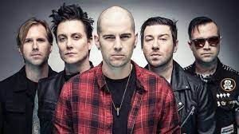

Avenged Sevenfold

Personil :
Personil Sekarang :
- M. Shadow - Vokal utama, piano, gitar (1999-sekarang)
- Synyster Gates - Gitar utama, vokal latar (2000-sekarang)
- Zacky Vengeance - Gitar ritme, vokal latar (1999-sekarang)
- Johnny Christ - Bass, vokal latar (2002-sekarang)
- Brooks Wackerman - Drum (2016-sekarang)
Mantan Personil :
- Matt Wendt - Bass (1999-2000)
- Justin Meacham - Bass, piano (2000-2001)
- Dameon Ash - Bass (2001-2002)
- The Rev - Drum, vokal (1999-2009)
- Mike Portnoy - Drum (2010)
- Arin ilejay - Drum (2011-2015)
Garis Waktu :
- M. Shadow(1999-2023)
- Synyster Gates(1999-2023)
- Zacky Vengeance(1999-2023)
- Johnny Christ(2003-2023)
- The Rev(1999-2009)
Diskografi :
- Sounding the Seventh Trumpet (2001)
- Waking the Fallen (2003)
- City of Evil (2005)
- Avenged Sevenfold (2007)
- Diamonds in The Rough (2008)
- Nightmare (2010)
- Hail to The King (2013)
- The Stage (2016)
- Life Is But A Dream (2023)